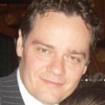

|  | Jose Rolando Heredia | ||
| Home | About jrh | Gallery | Contact |
ESPANOL |
ENGLISH |
Jose Rolando Heredia es un profesional de la ingenieria civil con 30 anos de experiencia, que a ejercidos deversos cargos en la industria, principalmente en Venezuela, en la universidad Santa Maria de Caracas obtiene el titulo de Ingeniero Civil en 1990, en el mismo ano cursa una especializacion en Vias de Comunicacion, posteriormente en el ano 2006 realiza una especializacion en Gerencia en el Instituto Venezolano de Gerencia; en su carrera laboral destaca su desempeno como vicepresidente ejecutivo en la compania "Class Light" empresa de la que formo parte 20 anos. | Jose Rolando Heredia is a civil engineering professional with 30 years of experience, who has held various positions in the industry, mainly in Venezuela, at the University Santa Maria de Caracas obtained the title of Civil Engineer in 1990, in the same year he studied a specialization in Vias de Comunicacion, later in 2006 he made a specialization in Management at the Venezuelan Institute of Management; In his career, he stands out as an executive vice president in the company "Class Light", a company of which 20 years ago. |
PH The Grand Tower, Centro Seguros la Paz, Torres de Parque Central,
Parque Cristal
CCCTamanaco, Centro San Ignacio, Centro Multi Plaza
Viaducto Caracas-La Guaira, Puente Angostura (Ciudad Bolivar)